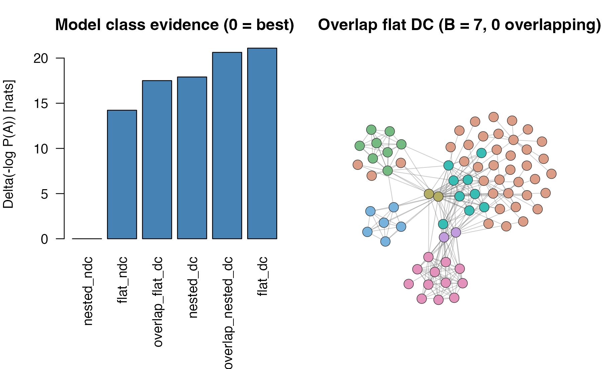

Overlapping SBMs & Bayesian Model Class Selection
Source:vignettes/model-class-selection.Rmd
model-class-selection.RmdThis article corresponds to
demo("model_class_selection"). Choosing among flat
vs. nested, degree-corrected (DC) vs. non-degree-corrected (NDC), and
overlapping vs. non-overlapping SBMs requires integrating over posterior
uncertainty rather than comparing only MAP point estimates.
rgraphtool computes the full Bayesian marginal
evidence:
\[-\ln P(A) = \langle \Sigma(A, b) \rangle_{P(b \mid A)} - \mathcal{H}(b),\]
where \(\mathcal{H}(b)\) is the posterior partition entropy estimated via mode clustering.
1. MAP comparison across all 8 model classes
lesmis <- load_or_fallback_lesmis()
g <- lesmis$graph
set.seed(42)
cmp_map <- compare_model_classes(g, method = "map", nruns = 3L)
print(cmp_map)
#> <SBM model class comparison (MAP description length, distributed degree prior)>
#> model B levels description_length delta posterior_weight
#> overlap_flat_ndc 8 1 685.101 0.000 8.52e-01
#> overlap_flat_dc 7 1 687.173 2.073 1.07e-01
#> flat_ndc 8 1 688.716 3.615 2.29e-02
#> overlap_nested_dc 6 8 689.555 4.455 9.91e-03
#> overlap_nested_ndc 7 8 690.268 5.167 4.86e-03
#> nested_ndc 8 8 690.795 5.695 2.87e-03
#> flat_dc 7 1 699.702 14.601 3.88e-07
#> nested_dc 6 8 701.731 16.630 5.11e-08
#> Best model: overlap_flat_ndc2. Full Bayesian posterior marginal evidence
Integrating over the posterior via method = "posterior"
properly accounts for the Occam factor (posterior entropy) of each model
class and produces a pairwise log Bayes factor matrix.
set.seed(42)
cmp_post <- compare_model_classes(
g,
models = c("flat_ndc", "flat_dc", "nested_ndc", "nested_dc",
"overlap_flat_dc", "overlap_nested_dc"),
method = "posterior",
nsamples = 150L,
thin = 5L,
burnin = 50L
)
print(cmp_post)
#> <SBM model class comparison (posterior/variational, distributed degree prior)>
#> model B levels description_length posterior_entropy
#> nested_ndc 8 8 690.795 33.488
#> flat_ndc 8 1 688.716 12.688
#> overlap_flat_dc 7 1 687.173 6.311
#> nested_dc 6 8 702.924 32.118
#> overlap_nested_dc 7 8 689.119 6.640
#> flat_dc 6 1 707.498 24.478
#> neg_log_evidence delta posterior_weight
#> 668.224 0.000 1.00e+00
#> 682.451 14.227 6.63e-07
#> 685.731 17.507 2.49e-08
#> 686.134 17.909 1.67e-08
#> 688.856 20.631 1.10e-09
#> 689.325 21.101 6.85e-10
#> Best model: nested_ndc
# Pairwise log Bayes factors (positive favors row over column)
round(cmp_post$log_bayes_factors, 2)
#> nested_ndc flat_ndc overlap_flat_dc nested_dc
#> nested_ndc 0.00 14.23 17.51 17.91
#> flat_ndc -14.23 0.00 3.28 3.68
#> overlap_flat_dc -17.51 -3.28 0.00 0.40
#> nested_dc -17.91 -3.68 -0.40 0.00
#> overlap_nested_dc -20.63 -6.40 -3.12 -2.72
#> flat_dc -21.10 -6.87 -3.59 -3.19
#> overlap_nested_dc flat_dc
#> nested_ndc 20.63 21.10
#> flat_ndc 6.40 6.87
#> overlap_flat_dc 3.12 3.59
#> nested_dc 2.72 3.19
#> overlap_nested_dc 0.00 0.47
#> flat_dc -0.47 0.00
old_par <- graphics::par(mfrow = c(1L, 2L), mar = c(8, 4, 3, 1))
tab <- cmp_post$summary
graphics::barplot(
tab$delta,
names.arg = tab$model,
las = 2,
ylab = "Delta(-log P(A)) [nats]",
col = ifelse(tab$model == cmp_post$best_model, "darkorange", "steelblue"),
main = "Model class evidence (0 = best)"
)
ov_st <- cmp_post$states$overlap_flat_dc
ov_mat <- overlap_groups(ov_st)$matrix
n_ov <- sum(rowSums(ov_mat > 0L) > 1L)
graphics::par(mar = c(2, 2, 3, 1))
plot_marginals(
g,
ov_mat,
positions = lesmis$positions,
radius = 0.045,
main = sprintf("Overlap flat DC (B = %d, %d overlapping)",
overlap_groups(ov_st)$B, n_ov)
)
graphics::par(old_par)